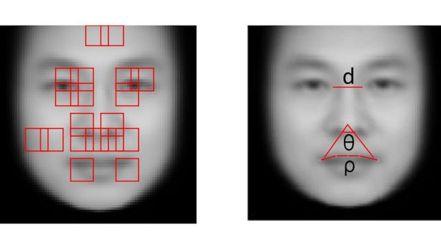

Introduction
The criminal justice system has always stood on the foundation where people, regardless of their identities, are treated equally by the law. But in many cases, we manipulate the accuracy of this system through our own past experiences and biased expectations of others. In the early 19th century the criminologist Cesare Lombroso became interested in the notion that our physical features deeply reflect our moral character traits. In his view, criminals are revealed in their physiognomy and we can therefore detect them by looking at pictures of their faces. This notion was debunked at the time, since it relied heavily on conventional racism whereby criminals were represented as subhuman or primitive savages.
Lombroso.
Lombroso’s work influenced the later 2016 studies of Xialoin Wu and Xi Zhang who claimed that they have developed and researched an algorithm that could distinguish criminals simply by scanning a photograph of their face. Their study reads, “Unlike a human examiner/judge, a computer vision algorithm or classifier has absolutely no subjective baggages, having no emotions, no biases whatsoever due to past experience, race, religion, political doctrine, gender, age, etc., no mental fatigue, no preconditioning of a bad sleep or meal.
The automated inference on criminality eliminates the variable of meta-accuracy (the competence of the human judge/examiner) all together.” Wu & Zhang (2017). The training data comes from us humans who predominantly rely on appearances when convicting criminals. Their claim, however, is widely believed to be “bullshit” since the algorithm is going to be every bit as biased as the training data that was used to create it. People are naturally biased about appearances when they convict. Less attractive people are more likely to be convicted for crimes. The training data from this so-called unbiased algorithm isn’t actually picking up criminality. Instead it picks up attractiveness based on facial structure while neglecting facial expressions.
In his tweet Jeremy Howard responds to a prominent AI researcher's decision to quit his research because of "ethical concerns". In my blog, I expand on these ethical concerns and relate this tweet to a research paper called "Computer Vision Machine Learning and Future-Oriented Ethics" by Abagayle L. Blank. Let's get straight into it.
Ethical Concerns.
In the paper Artificial Intelligence is defined as "a growing resource of interactive, autonomous, self-learning agency, which enables computational artifacts to perform tasks that otherwise would require human intelligence to be executed successfully". Computer vision is a subset of AI engineering that allows computers to be able to "see" events in the real world or perceive distinct details in an image. The leading technology to enable this is called Computer Vision Machine Learning (CVML). It is a special application of machine learning. The applications for computer vision can be facial recognition and self-driving cars.
Bibliography
Wu, X. Zhang, X. (2016). Inference on Criminality using Face Images. Shanghai Jiao Tong University. P. 1-5.